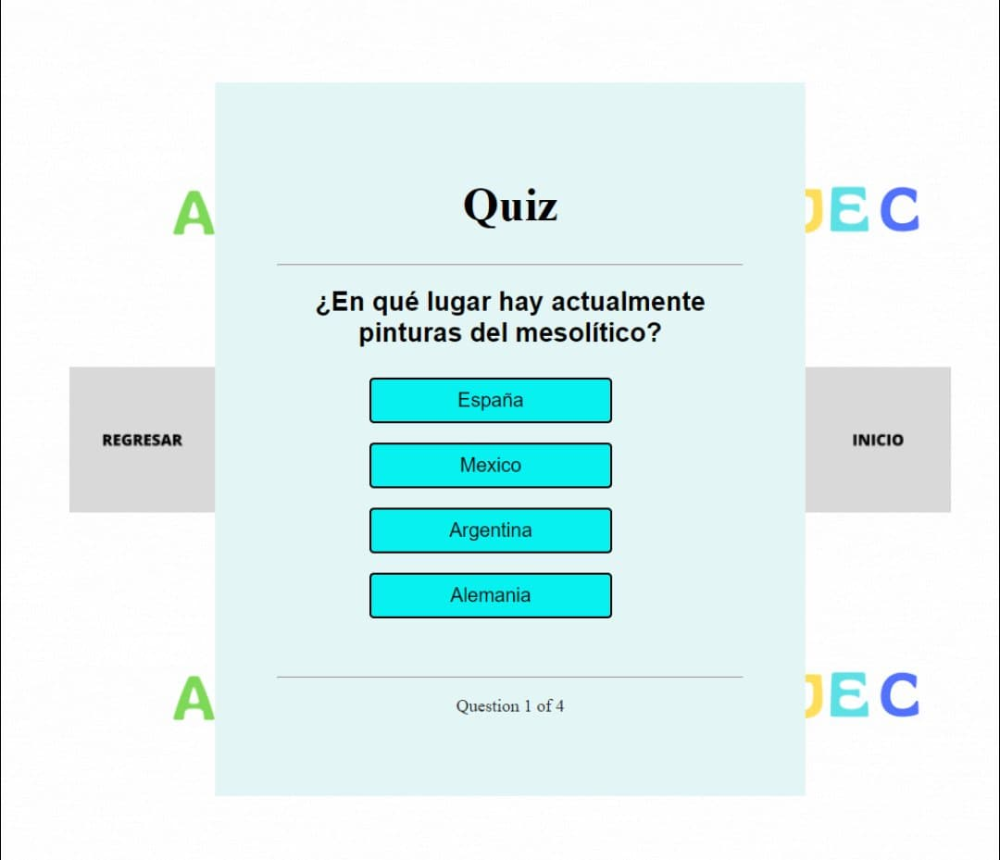

De forma concreta la herramienta ABSJEC para desarrollar Tests pregunta-respuesta es un utensilio digital que de una forma o manera como se desee llamar permite desarrollar nuestras capacidades de conocimientos generales mediante el uso de preguntas y respuestas de opción múltiple.
Con esto se puede ampliar nuestro conocimiento o en su debido caso puede funcionar como una herramienta extra para hacer clases o actividades más dinámicas y divertidas de complemento.
También con su interfaz de inicio permitirá entender de una forma sencilla el funcionamiento de la misma, generando así una completa atracción que propicie el uso.
Esta herramienta es demasiado útil para estudiantes y profesores para repasar y aprender conceptos de forma aún más fácil y más entretenida, una de las formas más común es como preguntas de tipo test.
El objetivo de este proyecto es crear una herramienta de aprendizaje para alumnos de cualquier nivel educativo, que les pueda ayudar a estudiar o hacer sus clases más didácticas y tener así diferentes formas de aprendizaje, ya que con esta herramienta se puede generar una serie de preguntas que pueden servir como objeto de estudio. En conclusión el objetivo de nuestro proyecto es propiciar el aprendizaje mediante la recreación ejemplificada con un juego didáctico de opciones.
